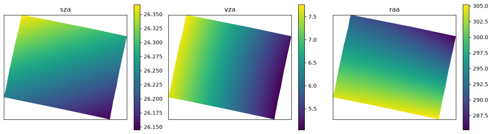
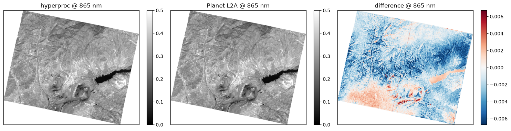
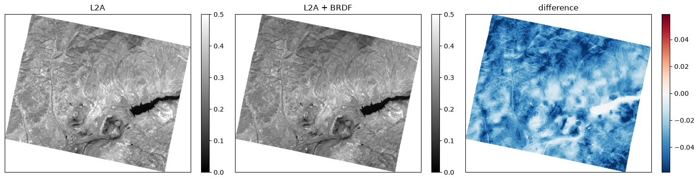
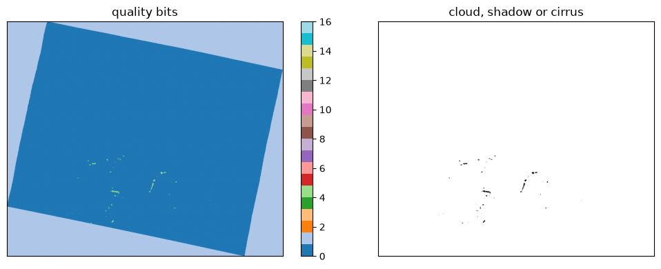
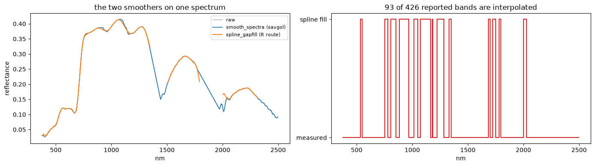
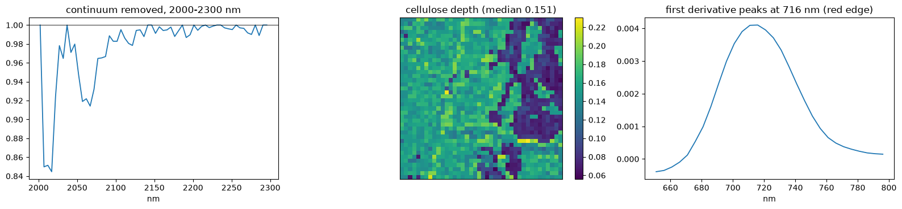
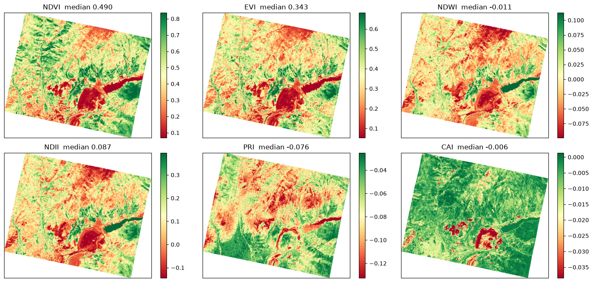
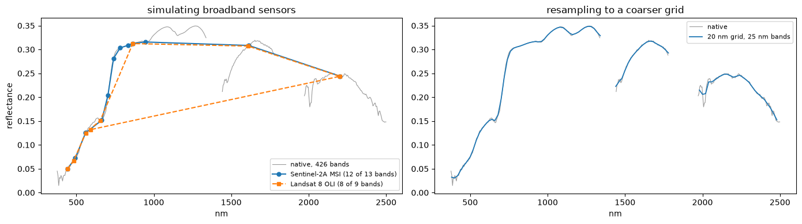

Tanager — tutorial¶
Saved outputs available — not rerun
Download the original notebook · Source: tests/0_src_code/tanager_tutorial.ipynb
Archived tutorial, not an automatic test
This is a read-only rendering of the existing notebook. Code was not executed for the website. Paths and saved outputs belong to the original environment. Some prose describes intent rather than the exact current implementation. Read the notebook caveats before running cells. Cells can write large files, download external data, or reuse cached results.
How to read outputs
Figures below are stored notebook outputs, not newly generated results. Text outputs are expanded by default and can be collapsed; long logs may be shortened for readability; the downloadable notebook retains the complete original output.
hyperproc, end to end on Tanager¶
A tutorial and a test at once. It walks the whole package on one Tanager granule, from opening a file to writing a corrected, quality-flagged, analysis-ready product.
Every function is introduced with a table of its parameters and what each one does, so you can change the behaviour rather than copy the call. Where a default was chosen for a reason, the reason is given.
This granule: 665 x 782 pixels at 30 m, EPSG:32642, 426 bands, 376 to 2499 nm - the finest spectral sampling of the five.
Tanager samples 426 bands over the same range EnMAP covers with 224, so it is the best of the five for anything that depends on narrow features - and the scene is small, which makes it the quickest whole-scene run in this set.
The corrections, and the order they go in¶
| Stage | What it removes | Applies to |
|---|---|---|
| Atmospheric | the atmosphere between the surface and the sensor | any L1B radiance |
| BRDF | brightness that comes from the viewing and illumination angles | any reflectance |
| Topographic | brightness from the slope facing the sun | airborne only |
Atmospheric correction comes first. It turns radiance into surface reflectance, and the geometric corrections are defined on reflectance, so nothing else can run before it. BRDF normalisation then removes the effect of the viewing and illumination angles.
Topographic correction is not part of the satellite route. In this package it is restricted to airborne flightlines, where metre pixels make the terrain signal strong and a flightline group gives the angular spread needed to separate terrain from view angle. For Tanager, as for every other satellite the package reads, the chain is atmospheric then BRDF. The airborne notebooks cover the topographic stage.
The three ways in, and what each produces¶
| You have | You run | You get |
|---|---|---|
| L1B radiance | step 3.1 | *_ac.tif |
| L1B radiance | step 3.2 | *_ac_brdf.tif in one call |
a saved *_ac.tif |
step 3.3 | *_ac_brdf.tif without redoing the retrieval |
| L2A reflectance | step 4 | *_brdf.tif |
Every one of those can be written as GeoTIFF or as ENVI; step 0 has the switch.
What you need¶
- the Tanager granule in
tests/data/Tanager: the L1B file (top-of-atmosphere radiance, already orthorectified) and the L2A file (Planet's own surface reflectance, on the same grid), plus the sibling metadata the reader finds by itself; - for the atmospheric correction, ISOFIT.
pip install 'hyperproc[atmos]'thenhyperproc-atmos-setuponce, which fetches the radiative-transfer engines and the surface libraries (several GB); - for the BRDF correction, Earth Engine.
pip install 'hyperproc[brdf]'andearthengine authenticateonce.
Everything is computed from the granule and written into tests/output/TANAGER.
This notebook processes the whole granule. The ISOFIT retrieval is the slow step and can take an hour or more; set WINDOW in step 0 to try it quickly first.
import os, sys, json, time, warnings
from pathlib import Path
REPO = Path.cwd()
while not (REPO / "hyperproc").is_dir() and REPO != REPO.parent:
REPO = REPO.parent
sys.path.insert(0, str(REPO))
import numpy as np
import xarray as xr
import matplotlib.pyplot as plt
%matplotlib inline
import rasterio
import hyperproc as hp
from hyperproc import correct # binds hp.correct; step 4 needs it even if step 3 is skipped
warnings.filterwarnings("ignore", category=RuntimeWarning)
print("hyperproc", hp.__version__, "from", REPO)
Step 0 — the control panel¶
Everything worth changing is in one cell, so you can set it once and run the notebook straight through.
| Parameter | What it controls |
|---|---|
WINDOW |
None processes the whole granule; a {"y": (a, b), "x": (c, d)} dict processes a subset. It indexes the L1B grid, and step 1 works out which part of the L2A that is |
WORKERS |
cores given to the ISOFIT retrieval |
EXPORT_FORMAT |
"GTiff" or "ENVI". Every product below follows it |
SZA_REF, VZA_REF |
the geometry the BRDF step normalises to. 45 degrees and nadir is the usual convention |
SPECTRAL_MAP |
how MODIS's seven correction factors reach Tanager's bands |
DIAG_NM |
the wavelength used for the maps and comparisons |
RUN_AC, RUN_BRDF, RUN_POST |
switch off a whole section if you only want part of the notebook |
OUT |
follows WINDOW: tests/output/TANAGER for a whole scene, tests/output/TANAGER_window for a subset, so the two runs never share an ISOFIT working directory |
HYPERPROC_CACHE_DIR is redirected into the output folder so the compiled surface priors
and any downloaded elevation tiles land with the products instead of in your home
directory.
# ---- what to run -----------------------------------------------------------------
RUN_AC = True
RUN_BRDF = True
RUN_POST = True
EXPORT_FORMAT = "GTiff" # or "ENVI"
# ---- processing parameters -------------------------------------------------------
WINDOW = None # {"y": (230, 430), "x": (290, 490)} for a much quicker pass
WORKERS = 20
SZA_REF = 45.0 # or "observed" to keep each pixel's own sun angle
VZA_REF = 0.0
SPECTRAL_MAP = "nearest" # or "interp"
DIAG_NM = 865.0
# ---- where things go -------------------------------------------------------------
# the folder follows WINDOW, so a subset run and a whole-scene run never share an
# ISOFIT working directory and cannot reuse each other's retrieval by accident
DATA = REPO / "tests" / "data"
OUT = REPO / "tests" / "output" / ("TANAGER" if WINDOW is None else "TANAGER_window")
OUT.mkdir(parents=True, exist_ok=True)
L1_GLOB = "Tanager/*_ortho_radiance_hdf5.h5"
L2_GLOB = "Tanager/*_ortho_sr_hdf5.h5"
LIKE_GLOB = None
WORK_DIR = OUT / "02_ac" / "isofit" # ISOFIT's working directory
MODIS_DIR = OUT / "03_ac_brdf" / "mcd43" # MODIS BRDF parameters land here
os.environ["HYPERPROC_CACHE_DIR"] = str(OUT / "cache") # surface priors, elevation tiles
EXT = hp.FORMATS[EXPORT_FORMAT]
print(f"output {OUT}")
print(f"format {EXPORT_FORMAT} ({EXT})")
print(f"window {WINDOW or 'whole scene'}")
Saved output
Two helpers, because a row number is not a place¶
WINDOW above is worth one warning, and it applies to every raster comparison you will
ever write. When WINDOW is set, a product covers a small patch somewhere inside the
scene, not the scene's top-left corner. Comparing product[:h, :w] with scene[:h, :w]
then puts two completely different pieces of ground side by side.
Line up by coordinate, never by array index. These helpers do that, and every comparison below goes through them.
| Helper | What it does |
|---|---|
raster_grid(path) |
the pixel-centre coordinates of a raster on disk, read from its affine transform |
same_ground(ds, x, y) |
the part of a dataset covering those coordinates. method="nearest" with a one-pixel tolerance means a grid that does not really overlap raises, instead of quietly handing back the wrong pixels |
for_export(ds) |
a dataset ready to write. A raster file needs a map projection, so a swath is passed through hp.georeference first and anything already projected is returned untouched |
They work unchanged when WINDOW is None: the product then covers the whole scene and
the selection is the identity.
def raster_grid(path):
'''Pixel-centre coordinates (x, y) of a raster on disk.'''
with rasterio.open(path) as src:
tr = src.transform
return (tr.c + (np.arange(src.width) + 0.5) * tr.a,
tr.f + (np.arange(src.height) + 0.5) * tr.e)
def same_ground(ds, x, y):
'''The part of `ds` covering those coordinates, to within one pixel.'''
tol = abs(float(ds.x[1] - ds.x[0]))
return ds.sel(x=x, y=y, method="nearest", tolerance=tol)
def for_export(ds):
'''A dataset ready to write: a swath is projected first, a grid passes through.
GeoTIFF and ENVI both need a map projection. A swath has per-pixel latitude
and longitude instead, so it is resampled onto a regular grid. Integer flag
layers survive this unchanged.
'''
return ds if ds.attrs.get("crs") else hp.georeference(ds)
Step 1 — reading¶
hp.open(path, sensor=None, level=None, **kwargs)¶
The only entry point you need. It works out the sensor and level from the filename, finds
the sibling files, and returns an xarray.Dataset with the same shape of metadata
whatever the instrument: reflectance or radiance on (y, x, wavelength), the
wavelength and FWHM as coordinates, and the geometry and masks as 2-D layers.
| Parameter | Default | What it does |
|---|---|---|
path |
— | the main file. The siblings this reader needs are found automatically |
sensor, level |
guessed | override when the filename has been changed and cannot be recognised |
Tanager's reader (open_tanager) takes these, passed through as keyword arguments:
| Parameter | Default | What it does |
|---|---|---|
wl_range |
None |
(400, 1000) loads only part of the spectrum |
good_bands_only |
False |
drop the bands Planet flags unusable rather than keeping them as NaN |
masks |
True |
attach Planet's cloud and related masks |
geometry |
True |
attach the sun and view angles. Leave this on: the BRDF step needs them |
extras |
True |
attach the extra retrieved layers Planet ships |
uncertainty |
False |
also read the uncertainty cube, which doubles the read |
Nothing is read from disk here. The cube is lazy, so opening a large granule is instant and only the parts you touch are loaded.
Four helpers for looking before you leap¶
| Call | What it gives you |
|---|---|
hp.sniff(path) |
the sensor, level, granule name and acquisition time without opening the cube |
hp.summary() |
one line per reader: the sensors the installed version can read |
hp.list_readers() |
the full table, including which levels each reader handles |
hp.describe(ds, var=None) |
the band table, value ranges and layers of an opened dataset |
hp.main_var(ds) |
the name of the cube, "reflectance" or "radiance", so your code need not guess |
print(hp.summary()) # one line per reader
hp.list_readers() # the full table: which sensors and levels, and what each expects
Saved output
Implemented: AVIRIS L1B, AVIRIS L2A, AVIRIS-CLASSIC L1B, AVIRIS-CLASSIC L2A, AVIRIS-NG L1B, AVIRIS-NG L2A, AVIRIS3 L1B, AVIRIS3 L2A, AVIRIS5 L1B, AVIRIS5 L2A, DESIS L1B, DESIS L1C, DESIS L2A, EMIT L1B, EMIT L2A, ENMAP L1B, ENMAP L1C, ENMAP L2A, NEON L1, PACE L1B, PACE L2, PRISMA L1, PRISMA L2B, PRISMA L2C, PRISMA L2D, TANAGER L1B, TANAGER L2A. Planned: NEON.
sensor level status expects
----------------------------------------------------------------------------
AVIRIS L1B ready the radiance cube, its .hdr, or the folder holding it - *_RDN_ORT (AVIRIS-3), *_rdn_*_img (NG), *_sc01_ort_img (Classic)
AVIRIS L2A ready the reflectance cube, its .hdr, or the folder holding it - *_RFL_ORT (AVIRIS-3), *_RFL_ORT.nc (-5), *_rfl_*_img (NG), *_corr_*_img (Classic)
AVIRIS-CLASSIC L1B ready AVIRIS-CLASSIC L1B cube, .hdr, or folder
AVIRIS-CLASSIC L2A ready AVIRIS-CLASSIC L2A cube, .hdr, or folder
AVIRIS-NG L1B ready AVIRIS-NG L1B cube, .hdr, or folder
AVIRIS-NG L2A ready AVIRIS-NG L2A cube, .hdr, or folder
AVIRIS3 L1B ready AVIRIS3 L1B cube, .hdr, or folder
AVIRIS3 L2A ready AVIRIS3 L2A cube, .hdr, or folder
AVIRIS5 L1B ready AVIRIS5 L1B cube, .hdr, or folder
AVIRIS5 L2A ready AVIRIS5 L2A cube, .hdr, or folder
DESIS L1B ready DESIS-HSI-L1B-*-SPECTRAL_IMAGE.tif
DESIS L1C ready DESIS-HSI-L1C-*-SPECTRAL_IMAGE.tif
DESIS L2A ready DESIS-HSI-L2A-*-SPECTRAL_IMAGE.tif
EMIT L1B ready EMIT_L1B_RAD_*.nc (OBS and MASK siblings are picked up automatically)
EMIT L2A ready EMIT_L2A_RFL_*.nc (MASK and OBS siblings are picked up automatically)
ENMAP L1B ready ENMAP01-____L1B-*-SPECTRAL_IMAGE[_VNIR|_SWIR].TIF
ENMAP L1C ready ENMAP01-____L1C-*-SPECTRAL_IMAGE[_VNIR|_SWIR].TIF
ENMAP L2A ready ENMAP01-____L2A-*-SPECTRAL_IMAGE[_VNIR|_SWIR].TIF
NEON L1 ready NEON_D??_SITE_DP1_YYYYMMDD_HHMMSS_reflectance.h5 (one flightline)
NEON L3 not written NEON_D*_SITE_DP3_*_reflectance.h5 (1 km mosaic tiles)
PACE L1B ready PACE_OCI.*.L1B.*.nc
PACE L2 ready PACE_OCI.*.L2.*.nc
PRISMA L1 ready PRS_L1_STD_*.he5
PRISMA L2B ready PRS_L2B_STD_*.he5
PRISMA L2C ready PRS_L2C_STD_*.he5
PRISMA L2D ready PRS_L2D_STD_*.he5
TANAGER L1B ready *_ortho_radiance_hdf5.h5
TANAGER L2A ready *_ortho_sr_hdf5.h5
l1_path = sorted(DATA.glob(L1_GLOB))[0]
l2_path = sorted(DATA.glob(L2_GLOB))[0]
print("sniffed:", hp.sniff(l1_path), hp.sniff(l2_path))
l1 = hp.open(l1_path) # top-of-atmosphere radiance, already orthorectified
l2 = hp.open(l2_path) # Planet's own surface reflectance, on the same grid
for name, ds in (("L1B", l1), ("L2A", l2)):
print(f"\n{name}: {dict(ds.sizes)} var={hp.main_var(ds)} units={ds.attrs.get('units')}")
print(f" crs={ds.attrs.get('crs') or 'none (swath - no map projection)'}")
Saved output
# The L2A scenarios (steps 4 to 6) work on this. It is the whole granule when WINDOW is
# None, so a quick pass stays quick. L1B and L2A share one grid on Tanager, so the same
# row and column numbers pick out the same ground in both.
l2_sub = l2 if WINDOW is None else l2.isel(y=slice(*WINDOW["y"]), x=slice(*WINDOW["x"]))
print("the piece steps 4-6 use:", dict(l2_sub.sizes))
Saved output
sensor Tanager L2A
granule 20250503_064345_16_4001_ortho_sr
acquired 2025-05-03T06:43:45
grid 665 x 782 (ortho)
pixel 30.0 m
extent x 585450.0000 .. 608910.0000 y 4537740.0000 .. 4557690.0000
bands 426 376.4 - 2499.0 nm (fwhm 6.1 nm)
flagged 58 bands flagged unusable (provider)
valid px ~100.0% of 520,030 (from a 4,356-px sample)
reflectan median 0.2011 p1 -0.0100 p99 0.4041
masks cloud=0.1% cirrus=0.0%
geometry sza=26.3deg saa=162.1deg vza=6.4deg vaa=98.6deg raa=296.4deg
The geometry, and why it matters later¶
Both corrections are functions of angle, so the reader attaches them per pixel: sza and
saa for the sun, vza and vaa for the sensor, and raa for the angle between them.
Read the spread below, not just the range. A narrow swath spans only a degree or two of view zenith, so the BRDF correction is mostly a change of level to the target geometry rather than the removal of an across-track gradient - and the validation at the end of step 4 has little to work with.
for v in ("sza", "saa", "vza", "vaa", "raa", "slope", "cos_i", "elev"):
if v in l2:
a = np.asarray(l2[v].values, dtype="float64")
print(f" {v:6s} {np.nanmin(a):8.2f} .. {np.nanmax(a):8.2f} spread {np.nanmax(a)-np.nanmin(a):7.2f}")
layers = [v for v in ("sza", "vza", "raa", "cos_i", "elev") if v in l2][:4]
fig, ax = plt.subplots(1, len(layers), figsize=(4.3 * len(layers), 3.6))
for a, v in zip(np.atleast_1d(ax), layers):
im = a.imshow(l2[v].values, cmap="viridis"); a.set_title(v); a.set_xticks([]); a.set_yticks([])
plt.colorbar(im, ax=a, fraction=0.046)
plt.tight_layout(); plt.show()
Saved output

Step 2 — writing, in either format¶
hp.to_geotiff(ds, path, var=None, compress="deflate", overviews=None, overview_resampling="average")¶
| Parameter | Default | What it does |
|---|---|---|
path |
— | a .tif, or a directory, in which case the file is named after the granule |
var |
the cube | which variable to write |
compress |
"deflate" |
lossless, roughly halves the file. None writes uncompressed |
overviews |
None |
True builds internal pyramids so a GIS can draw the scene without reading it at full resolution; a list like [2, 4, 8] sets the factors |
overview_resampling |
"average" |
right for reflectance. Use "nearest" or "mode" for a classification or a flag layer, where averaging would invent values |
hp.to_envi(ds, path, var=None, interleave="bil")¶
| Parameter | Default | What it does |
|---|---|---|
path |
— | an .img, or a directory. The header is written beside it as <stem>.hdr |
var |
the cube | which variable to write |
interleave |
"bil" |
"bil", "bip" or "bsq". BIL is the hyperspectral norm and matches how the readers stream |
Why you would choose ENVI. A GeoTIFF can only label a band with free text, so
650.4 nm is something a person reads. An ENVI header states wavelength, fwhm and
bbl as fields that come back as numbers, so the band centres, the widths and the
bad-band list survive the export. A GeoTIFF cannot carry a bad-band list at all. The
costs are no compression, about twice the disk, and no internal pyramids.
hp.to_raster(ds, path, format="GTiff", **kwargs)¶
Picks between the two and passes the rest through. This notebook uses it everywhere so
that EXPORT_FORMAT controls the whole run.
_cy, _cx = l2_sub.sizes["y"] // 2, l2_sub.sizes["x"] // 2 # centre of the piece in use
demo = l2_sub.isel(y=slice(_cy - 30, _cy + 30), x=slice(_cx - 30, _cx + 30))
demo_w = for_export(demo) # a swath has to be projected before it can be written
t0 = time.time()
tif = hp.to_geotiff(demo_w, OUT / "01_read" / "demo.tif", overviews=True)
img = hp.to_envi(demo_w, OUT / "01_read" / "demo.img", interleave="bil")
print(f"GeoTIFF {tif.stat().st_size/1e6:6.2f} MB ENVI {img.stat().st_size/1e6:6.2f} MB"
f" ({time.time()-t0:.1f} s)")
print("\nwhat the ENVI header carries that a GeoTIFF cannot:")
for line in img.with_suffix(".hdr").read_text().splitlines():
if line.split("=")[0].strip() in ("wavelength units", "interleave", "data ignore value", "sensor"):
print(" ", line)
for kk in ("wavelength =", "fwhm =", "bbl ="):
if line.startswith(kk):
print(f" {kk:14s} {line.split('=',1)[1].strip()[:56]} ...")
Saved output
GeoTIFF 4.34 MB ENVI 6.13 MB (4.6 s)
what the ENVI header carries that a GeoTIFF cannot:
interleave = bil
data ignore value = nan
bbl = {1, 1, 1, 1, 1, 1, 1, 1, 1, 1, 1, 1, 1, 1, 1, 1, 1, 1, 1 ...
fwhm = {5.389999866, 5.420000076, 5.449999809, 5.480000019, 5.5 ...
sensor = Tanager
wavelength = {376.4400024, 381.4100037, 386.3800049, 391.3500061, 396 ...
wavelength units = Nanometers
hp.to_geotiff_2d(ds, path, var, overviews=None, overview_resampling="average", tags=None, format="GTiff")¶
For a single 2-D layer: an elevation model, a retrieved aerosol map, a flag band.
| Parameter | Default | What it does |
|---|---|---|
var |
— | required, the layer to write |
tags |
None |
a dict of metadata written into the file, which is how a flag layer carries its own bit meanings |
format |
"GTiff" |
as above. ENVI ignores overviews with a warning, since it has no internal pyramids |
hp.export_geometry(ds, path, layers=None, overviews=None, overview_resampling="average")¶
Writes the angle and terrain layers a correction consumes, one file each. Worth doing whenever you write a corrected product, because the product itself does not carry the angles and step 3.3 needs them.
| Parameter | Default | What it does |
|---|---|---|
layers |
all available | ("sza", "vza", "raa") to write only what the BRDF step needs |
hp.bands_to_csv(ds, path)¶
The band table as a CSV: wavelength, FWHM and the usable flag, one row per band.
hp.bands_to_csv(demo_w, OUT / "01_read" / "demo_bands.csv")
written = hp.export_geometry(demo_w, OUT / "01_read" / "geometry", layers=("sza", "vza", "raa"))
print("geometry layers written:", [p.name for p in written])
print("\nfolder now holds:", sorted(p.name for p in (OUT / "01_read").iterdir())[:8], "...")
Saved output
Step 3 — scenario A, starting from L1B radiance¶
3.1 Atmospheric correction¶
hp.atmos.process(source, out_dir, ...)¶
One call from a L1B granule to a finished product: the reflectance cube, the retrieved aerosol and water-vapour layers, the quality flags, a band CSV and a provenance JSON.
| Parameter | Default | What it does |
|---|---|---|
source |
— | the L1B file, or an already-opened dataset |
out_dir |
— | where the products go |
work_dir |
out_dir/isofit_work/<stem> |
where ISOFIT works. A finished run here is reused, which is how you resume an interrupted retrieval; delete the folder to force a redo |
stages |
("ac",) |
("ac", "brdf") chains the BRDF normalisation and names the product _ac_brdf |
engine |
"sRTMnet" |
the radiative-transfer engine. "6S" and "LibRadTran" also work; sRTMnet is the emulator JPL uses and is much the fastest |
workers |
24 |
cores for the retrieval |
window |
None |
{"y": (a, b), "x": (c, d)} corrects a subset. The product then covers only that footprint |
layers |
("aot550", "h2o") |
which retrieved 2-D layers to write beside the cube |
uncertainty |
False |
also write the posterior reflectance uncertainty cube, which doubles the output size |
quality |
True |
write the consolidated flag layer beside the product |
format |
"GTiff" |
"GTiff" or "ENVI" |
overviews |
True |
internal pyramids on every GeoTIFF written |
like |
None |
for a swath sensor, a projected dataset whose grid the product should reproduce |
overwrite |
False |
redo the retrieval even if the work directory holds one |
Anything else is passed to the retrieval itself: atmosphere, surface,
segmentation_size, num_neighbors, aot_prior_sigma.
This is the slow step. The cell before it checks the ISOFIT assets, so a missing engine fails in seconds rather than at minute forty.
if RUN_AC:
from hyperproc.atmos import check
report = check(engines=("sRTMnet",))
print("\nISOFIT assets ready:", report["ok"])
if not report["ok"]:
print("run `hyperproc-atmos-setup` first; the lines above say what is missing")
Saved output
Saved output
hyperproc.atmos check (python 3.12.11, isofit 4.1.5)
ini /home/fujiang/.isofit/isofit.ini
gfortran /usr/bin/gfortran
make /usr/bin/make
data ok /data/fujiang/isofit_assets/data
sixs ok /data/fujiang/isofit_assets/sixs exe /data/fujiang/isofit_assets/sixs/sixsV2.1
srtmnet ok /data/fujiang/isofit_assets/srtmnet
surface ok /data/fujiang/isofit_assets/surface
everything needed is in place
ISOFIT assets ready: True
if RUN_AC:
from hyperproc.atmos import process
t0 = time.time()
ac = process(l1_path, OUT / "02_ac", work_dir=WORK_DIR, stages=("ac",),
workers=WORKERS, window=WINDOW, format=EXPORT_FORMAT,
layers=("aot550", "h2o"), overviews=True, verbose=True)
print(f"\n{(time.time()-t0)/60:.1f} min -> {Path(ac['reflectance']).name}")
print("layers :", {k: Path(v).name for k, v in ac["layers"].items()})
print("quality:", Path(ac["quality"]).name)
else:
ac = None; print("RUN_AC is False; skipped")
Saved output
Saved output
Saved output
ISOFIT inputs for 20250503_064345_16_4001_ortho_radiance (sensor code tanager, fid 20250503_064345_tanager)
665 lines x 782 samples x 426 bands, radiance x0.1 -> uW/cm2/nm/sr
rdn /data/fujiang/Hyperspectral_data_processing/tests/output/TANAGER/02_ac/isofit/input/20250503_064345_tanager_rdn
loc /data/fujiang/Hyperspectral_data_processing/tests/output/TANAGER/02_ac/isofit/input/20250503_064345_tanager_loc
obs /data/fujiang/Hyperspectral_data_processing/tests/output/TANAGER/02_ac/isofit/input/20250503_064345_tanager_obs
valid pixels 70.9%; lat 41.075 lon 70.157 elev 771..3554 m
sza 26.1..26.4 vza 5.0..7.8 raa 55..75 deg utc 6.729 h
running: /home/fujiang/miniconda3/envs/hsi/bin/python -m isofit apply_oe /data/fujiang/Hyperspectral_data_processing/tests/output/TANAGER/02_ac/isofit/input/20250503_064345_tanager_rdn ...
Saved output
Saved output
Saved output
Saved output
/home/fujiang/miniconda3/envs/hsi/lib/python3.12/site-packages/rioxarray/_io.py:1148: NotGeoreferencedWarning: Dataset has no geotransform, gcps, or rpcs. The identity matrix will be returned.
warnings.warn(str(rio_warning.message), type(rio_warning.message)) # type: ignore
/home/fujiang/miniconda3/envs/hsi/lib/python3.12/site-packages/rioxarray/_io.py:1148: NotGeoreferencedWarning: Dataset has no geotransform, gcps, or rpcs. The identity matrix will be returned.
warnings.warn(str(rio_warning.message), type(rio_warning.message)) # type: ignore
/home/fujiang/miniconda3/envs/hsi/lib/python3.12/site-packages/rioxarray/_io.py:1148: NotGeoreferencedWarning: Dataset has no geotransform, gcps, or rpcs. The identity matrix will be returned.
warnings.warn(str(rio_warning.message), type(rio_warning.message)) # type: ignore
/home/fujiang/miniconda3/envs/hsi/lib/python3.12/site-packages/rioxarray/_io.py:1148: NotGeoreferencedWarning: Dataset has no geotransform, gcps, or rpcs. The identity matrix will be returned.
warnings.warn(str(rio_warning.message), type(rio_warning.message)) # type: ignore
Saved output
quality: fill 29.1%, cloud 0.1%, cirrus 0.0%, clear 70.8%
done in 102.5 min -> /data/fujiang/Hyperspectral_data_processing/tests/output/TANAGER/02_ac/20250503_064345_16_4001_ortho_radiance_ac.tif
102.4 min -> 20250503_064345_16_4001_ortho_radiance_ac.tif
layers : {'aot550': '20250503_064345_16_4001_ortho_radiance_ac_aot550.tif', 'h2o': '20250503_064345_16_4001_ortho_radiance_ac_h2o.tif'}
quality: 20250503_064345_16_4001_ortho_radiance_ac_quality.tif
if RUN_AC:
prov = json.loads(Path(ac["provenance"]).read_text())
print("the provenance JSON records what was done:")
for k in ("stages", "format", "sensor", "datetime"):
print(f" {k:10s} {prov[k]}")
print(f" {'grid':10s} {prov['grid']['shape']} {prov['grid']['crs']}")
print(f" {'isofit':10s} v{prov['isofit']['version']}, {prov['isofit']['seconds']} s")
print(f" {'quality':10s} " + ", ".join(f"{k} {v*100:.1f}%" for k, v in prov["quality"]["shares"].items()))
Saved output
if RUN_AC:
with rasterio.open(ac["reflectance"]) as src:
wl_ours = np.array([float(d.split()[0]) for d in src.descriptions])
b = int(np.argmin(np.abs(wl_ours - DIAG_NM)))
ours = src.read(b + 1)
xs, ys = raster_grid(ac["reflectance"]) # line up by coordinate, never by index
VAR = hp.main_var(l2)
k = int(np.argmin(np.abs(l2.wavelength.values - DIAG_NM)))
theirs = same_ground(l2[VAR].isel(wavelength=k), xs, ys).values
ok = np.isfinite(ours) & np.isfinite(theirs) & (ours > 0) & (theirs > 0)
print(f"our retrieval against the Planet L2A at {DIAG_NM:.0f} nm, {ok.sum():,} pixels:")
if ok.sum() > 100:
print(f" median difference {np.median(ours[ok]-theirs[ok]):+.4f}"
f" RMSE {np.sqrt(np.mean((ours[ok]-theirs[ok])**2)):.4f}"
f" r {np.corrcoef(ours[ok], theirs[ok])[0,1]:.4f}")
lim = float(np.nanpercentile(np.abs(ours - theirs), 98)) or 0.02
fig, ax = plt.subplots(1, 3, figsize=(15, 3.8))
for a, img, t, kw in ((ax[0], ours, "hyperproc", dict(cmap="gray", vmin=0, vmax=0.5)),
(ax[1], theirs, "Planet L2A", dict(cmap="gray", vmin=0, vmax=0.5)),
(ax[2], ours-theirs, "difference", dict(cmap="RdBu_r", vmin=-lim, vmax=lim))):
im = a.imshow(img, **kw); a.set_title(f"{t} @ {DIAG_NM:.0f} nm"); a.set_xticks([]); a.set_yticks([])
plt.colorbar(im, ax=a, fraction=0.046)
plt.tight_layout(); plt.show()
Saved output

3.2 BRDF normalisation, and the whole chain in one call¶
A satellite sees each pixel once, so it cannot measure its own angular response. The c-factor method borrows the shape from MODIS: for every 500 m cell MODIS publishes the three weights of a kernel model fitted over the preceding sixteen days, and the correction is the ratio of modelled reflectance at the target geometry to modelled reflectance at the observed one. Only the ratio is used, so the absolute level of the MODIS retrieval cancels and what transfers is the shape.
mcd43.fetch(...) (hyperproc.correct.mcd43)¶
Downloads and caches the MODIS parameters for a scene.
| Parameter | Default | What it does |
|---|---|---|
ds |
— | a dataset to take the footprint and date from, instead of passing them by hand |
bounds, date |
from ds |
(w, s, e, n) in degrees and YYYY-MM-DD, if you would rather be explicit |
out_dir |
the shared cache | where the downloaded file goes. A second call with the same footprint reuses it |
res |
None |
the grid step. None adapts to the image: never finer than MODIS's own 464 m, and coarser cells averaged when the image pixels are coarser |
days |
8 |
how far either side of the scene date to look if that day has no granule |
quality |
True |
also fetch the per-band quality and snow flags |
project |
None |
your Earth Engine Cloud project, if your credentials do not carry one |
overwrite |
False |
re-download even when the cache has it |
hp.correct.nbar(ds, params=None, ...)¶
| Parameter | Default | What it does |
|---|---|---|
params |
downloaded | the MODIS parameters. Pass a fetched object to avoid a second download |
sza_ref |
45.0 |
target solar zenith. A number is the usual NBAR convention; "observed" keeps each pixel's own sun and removes only the view effect, which never extrapolates the model in sun angle; "mean" uses the scene mean |
vza_ref, raa_ref |
0.0, 0.0 |
target view geometry, nadir by default |
spectral |
"nearest" |
"nearest" gives each band the closest MODIS band's factor, as published, at the cost of a step where the assignment switches. "interp" is smooth but applies a shape no MODIS band measured |
fill |
"none" |
what to do where MODIS has no retrieval. "none" leaves the pixel untouched and flags it; "median" uses the scene median; "nearest" copies the nearest valid factor |
clip |
(0.25, 4.0) |
bounds on the correction factor, which stop a near-zero modelled reflectance producing a wild ratio |
qa_max |
3 |
keep MODIS cells up to this quality. 3 keeps every retrieval, which is right here because a magnitude inversion scales all three weights together and that factor cancels in the ratio; 1 keeps full inversions only, at the cost of holes |
mask_snow |
True |
drop cells MODIS flags as snow-covered |
keep_c |
True |
attach the seven factors as a c_factor variable for inspection |
cache_dir, project |
passed to the fetch when params is not given |
Adding "brdf" to process(stages=...) runs the whole chain in one call.
if RUN_BRDF: # scenario B needs these too, with or without step 3.1
from hyperproc.correct import mcd43
params = mcd43.fetch(ds=l2_sub, out_dir=MODIS_DIR, verbose=True)
print(f"\nMODIS parameters {params.shape} at {abs(params.transform[0])*111320:.0f} m, "
f"date {params.date}, {params.coverage()*100:.0f} % of cells retrieved")
else:
params = None
Saved output
Saved output
Saved output
if RUN_AC and RUN_BRDF:
t0 = time.time()
acb = process(l1_path, OUT / "03_ac_brdf", work_dir=WORK_DIR, stages=("ac", "brdf"),
workers=WORKERS, window=WINDOW, format=EXPORT_FORMAT, overviews=True,
brdf=dict(params=params, sza_ref=SZA_REF, vza_ref=VZA_REF,
spectral=SPECTRAL_MAP, fill="none"), verbose=True)
print(f"\n{(time.time()-t0)/60:.1f} min -> {Path(acb['reflectance']).name}")
print(" the retrieval was reused from the work directory; only the BRDF step and the export ran")
else:
acb = None; print("skipped")
Saved output
Saved output
Saved output
ISOFIT inputs for 20250503_064345_16_4001_ortho_radiance (sensor code tanager, fid 20250503_064345_tanager)
665 lines x 782 samples x 426 bands, radiance x0.1 -> uW/cm2/nm/sr
rdn /data/fujiang/Hyperspectral_data_processing/tests/output/TANAGER/02_ac/isofit/input/20250503_064345_tanager_rdn
loc /data/fujiang/Hyperspectral_data_processing/tests/output/TANAGER/02_ac/isofit/input/20250503_064345_tanager_loc
obs /data/fujiang/Hyperspectral_data_processing/tests/output/TANAGER/02_ac/isofit/input/20250503_064345_tanager_obs
valid pixels 70.9%; lat 41.075 lon 70.157 elev 771..3554 m
sza 26.1..26.4 vza 5.0..7.8 raa 55..75 deg utc 6.729 h
reflectance product already present: /data/fujiang/Hyperspectral_data_processing/tests/output/TANAGER/02_ac/isofit/output/20250503_064345_tanager_rfl (overwrite=True to redo)
BRDF c-factor on reflectance {'y': 665, 'x': 782, 'wavelength': 426}: sza 26.3 deg, vza 5.0-7.8 deg
Saved output
/home/fujiang/miniconda3/envs/hsi/lib/python3.12/site-packages/rioxarray/_io.py:1148: NotGeoreferencedWarning: Dataset has no geotransform, gcps, or rpcs. The identity matrix will be returned.
warnings.warn(str(rio_warning.message), type(rio_warning.message)) # type: ignore
/home/fujiang/miniconda3/envs/hsi/lib/python3.12/site-packages/rioxarray/_io.py:1148: NotGeoreferencedWarning: Dataset has no geotransform, gcps, or rpcs. The identity matrix will be returned.
warnings.warn(str(rio_warning.message), type(rio_warning.message)) # type: ignore
/home/fujiang/miniconda3/envs/hsi/lib/python3.12/site-packages/rioxarray/_io.py:1148: NotGeoreferencedWarning: Dataset has no geotransform, gcps, or rpcs. The identity matrix will be returned.
warnings.warn(str(rio_warning.message), type(rio_warning.message)) # type: ignore
/home/fujiang/miniconda3/envs/hsi/lib/python3.12/site-packages/rioxarray/_io.py:1148: NotGeoreferencedWarning: Dataset has no geotransform, gcps, or rpcs. The identity matrix will be returned.
warnings.warn(str(rio_warning.message), type(rio_warning.message)) # type: ignore
Saved output
Saved output
Saved output
quality: fill 29.1%, cloud 0.1%, cirrus 0.0%, clear 70.8%
done in 0.4 min -> /data/fujiang/Hyperspectral_data_processing/tests/output/TANAGER/03_ac_brdf/20250503_064345_16_4001_ortho_radiance_ac_brdf.tif
0.4 min -> 20250503_064345_16_4001_ortho_radiance_ac_brdf.tif
the retrieval was reused from the work directory; only the BRDF step and the export ran
3.3 You already have *_ac.tif. Going on from there.¶
This is the common case: the retrieval ran days ago, the product is on disk, and you now want the BRDF version without spending another hour.
Two things stand in the way, and both are worth understanding rather than working around.
hp.open will not read a product back. The readers identify granules by their
provider's naming, and a file this package wrote is not one. Try it and you get a clear
refusal rather than a wrong answer. So a product is read with rasterio, and the
wavelengths come from the band descriptions in a GeoTIFF or from the wavelength field in
an ENVI header, which is one concrete reason to prefer ENVI for intermediate products.
The product carries no angles. process writes the reflectance cube, the retrieved
aerosol and water-vapour layers and the quality flags, but not the per-pixel geometry, and
the BRDF step needs sza, vza and raa. You have two ways to supply them:
- re-open the source granule, which is on the same grid;
- or write them at correction time with
hp.export_geometry, as step 2 did, so they are beside the product.
The helper below does the first. It is short on purpose: the point is to show what a product is, not to hide it.
The two routes agree, but not bit for bit, and the reason is worth knowing. Where
MODIS has no retrieval, fill="none" leaves a pixel untouched. The two routes sample the
464 m MODIS grid at slightly different points, so along the ragged edge of MODIS coverage
a pixel can be corrected by one route and left alone by the other. The median difference
is a hundredth of a percent of reflectance; a small tail of pixels differs by more. Use
fill="nearest" if you need the two routes to track each other closely.
def load_product(path, geometry_from=None, var="reflectance", bands=None):
'''Read a product this package wrote back into a dataset the corrections accept.
path a *_ac.tif or *_ac.img written by process() or to_raster()
geometry_from an opened granule on the same grid, to take sza/vza/raa from.
None returns the cube alone, which is enough for the spectral tools
but not for a BRDF correction.
bands None reads every band; a list of 0-based indices reads only those.
'''
with rasterio.open(path) as src:
envi = src.tags(ns="ENVI")
if "wavelength" in envi: # ENVI states them as numbers
wl = np.array([float(v) for v in envi["wavelength"].strip("{}").split(",")])
else: # GeoTIFF: parse the band labels
wl = np.array([float(d.split()[0]) for d in src.descriptions])
idx = list(range(src.count)) if bands is None else list(bands)
cube = src.read([i + 1 for i in idx]).astype("float32")
wl = wl[idx]
tr, crs = src.transform, str(src.crs)
ny, nx = src.height, src.width
ds = xr.Dataset(
{var: (("y", "x", "wavelength"), np.moveaxis(cube, 0, -1))},
coords={"wavelength": wl,
"x": tr.c + (np.arange(nx) + 0.5) * tr.a,
"y": tr.f + (np.arange(ny) + 0.5) * tr.e},
attrs={"crs": crs, "transform": tuple(tr.to_gdal()), "sensor": "TANAGER",
"stem": Path(path).stem, "units": "1"})
if geometry_from is not None:
g = same_ground(geometry_from, ds.x.values, ds.y.values) # by coordinate, not by index
for layer in ("sza", "saa", "vza", "vaa", "raa"):
if layer in g:
ds[layer] = (("y", "x"), np.asarray(g[layer].values, dtype="float32"))
return ds
# hp.open refuses a product, on purpose and with an explanation
if RUN_AC:
try:
hp.open(ac["reflectance"])
except ValueError as exc:
print("hp.open on a product:", str(exc)[:96], "...")
Saved output
if RUN_AC and RUN_BRDF:
geom = l2
saved = load_product(ac["reflectance"], geometry_from=geom)
print(f"loaded {Path(ac['reflectance']).name}")
print(f" {dict(saved.sizes)} {saved.wavelength.values.min():.0f}-{saved.wavelength.values.max():.0f} nm")
print(f" geometry attached: {[v for v in ('sza','vza','raa') if v in saved]}")
from_saved = hp.correct.nbar(saved, params=params, sza_ref=SZA_REF, vza_ref=VZA_REF,
spectral=SPECTRAL_MAP, fill="none", verbose=False)
slim = from_saved.drop_vars([v for v in ("c_factor", "modis_band") if v in from_saved.variables])
p = hp.to_raster(slim, OUT / "03b_from_saved_ac" / f"{Path(ac['reflectance']).stem}_brdf{EXT}",
format=EXPORT_FORMAT, **({"overviews": True} if EXPORT_FORMAT == "GTiff" else {}))
print(f"\nwrote {p.name}")
# the two routes agree, but not to the last bit - see the note above
with rasterio.open(acb["reflectance"]) as src:
wl_c = np.array([float(d.split()[0]) for d in src.descriptions])
bi = int(np.argmin(np.abs(wl_c - DIAG_NM)))
chained = src.read(bi + 1)
xs_c, ys_c = raster_grid(acb["reflectance"])
two_step = same_ground(from_saved.reflectance.isel(
wavelength=int(np.argmin(np.abs(from_saved.wavelength.values - DIAG_NM)))), xs_c, ys_c).values
ok = np.isfinite(chained) & np.isfinite(two_step) & (chained > 0.01)
d = chained[ok] - two_step[ok]
print(f"\nagainst the one-call chain at {DIAG_NM:.0f} nm, {ok.sum():,} pixels:")
print(f" median difference {np.median(d):+.2e} p99 |d| {np.percentile(np.abs(d), 99):.2e}"
f" max |d| {np.abs(d).max():.2e}")
print(f" as a fraction of reflectance: median {np.median(np.abs(d)/chained[ok])*100:.3f} %"
f" max {(np.abs(d)/chained[ok]).max()*100:.2f} %")
Saved output
Saved output
Step 4 — scenario B, starting from L2A reflectance¶
If you already have surface reflectance, the atmospheric stage is done and you go straight
to the geometric one. hp.correct.nbar is the same function step 3.2 used through
process, called directly on any dataset that carries reflectance and per-pixel angles.
Its parameters are the table in step 3.2.
The result is lazy, so nothing is computed until it is written.
if RUN_BRDF:
t0 = time.time()
l2_brdf = hp.correct.nbar(l2_sub, params=params, sza_ref=SZA_REF, vza_ref=VZA_REF,
spectral=SPECTRAL_MAP, fill="none", cache_dir=MODIS_DIR)
print(f"built in {time.time()-t0:.1f} s (lazy); stem -> {l2_brdf.attrs['stem']}")
for k, v in l2_brdf.attrs.items():
if k.startswith("brdf_"):
print(f" {k:24s} {v}")
Saved output
Saved output
Saved output
built in 1.0 s (lazy); stem -> 20250503_064345_16_4001_ortho_sr_brdf
brdf_method c-factor (Roy et al. 2016) with MODIS MCD43A1 kernel weights
brdf_kernels ross_thick+li_sparse_r (b_r=1.0, h_b=2.0)
brdf_target sza=45 vza=0 raa=0
brdf_spectral nearest
brdf_fill none
brdf_sampling bilinear
brdf_clip 0.25-4.0
brdf_quality qa_max=3 mask_snow=True
brdf_parameters /data/fujiang/Hyperspectral_data_processing/tests/output/TANAGER/03_ac_brdf/mcd43/MCD43A1_2025-05-03_69.9625_41.2167_93x68_240.00cpd.tif
brdf_parameter_date 2025-05-03
brdf_parameter_step_m 464
brdf_coverage 1.0000
brdf_unobserved 0.2914
if RUN_BRDF:
slim = l2_brdf.drop_vars([v for v in ("c_factor", "modis_band") if v in l2_brdf.variables])
export_ds = for_export(slim) # projects a swath, passes a grid through
if export_ds is not slim:
print(f"georeferenced {dict(slim.sizes)} -> {dict(export_ds.sizes)}")
t0 = time.time()
p = hp.to_raster(export_ds, OUT / "04_l2_brdf" / f"{l2_brdf.attrs['stem']}{EXT}",
format=EXPORT_FORMAT, **({"overviews": True} if EXPORT_FORMAT == "GTiff" else {}))
hp.bands_to_csv(export_ds, OUT / "04_l2_brdf" / f"{l2_brdf.attrs['stem']}_bands.csv")
print(f"wrote {p.name} ({p.stat().st_size/1e9:.3f} GB) in {(time.time()-t0)/60:.1f} min")
if RUN_BRDF:
VAR = hp.main_var(l2_sub)
b = int(np.argmin(np.abs(l2_sub.wavelength.values - DIAG_NM)))
before = np.asarray(l2_sub[VAR].isel(wavelength=b).values, dtype="float32")
after = np.asarray(l2_brdf[VAR].isel(wavelength=b).values, dtype="float32")
ok = np.isfinite(before) & np.isfinite(after) & (before > 0.01)
print(f"median change at {DIAG_NM:.0f} nm: {np.median((after[ok]-before[ok])/before[ok])*100:+.2f} %")
lim = float(np.nanpercentile(np.abs(after - before), 98)) or 0.05
fig, ax = plt.subplots(1, 3, figsize=(15, 3.8))
for a, img, t, kw in ((ax[0], before, "L2A", dict(cmap="gray", vmin=0, vmax=0.5)),
(ax[1], after, "L2A + BRDF", dict(cmap="gray", vmin=0, vmax=0.5)),
(ax[2], after-before, "difference", dict(cmap="RdBu_r", vmin=-lim, vmax=lim))):
im = a.imshow(img, **kw); a.set_title(t); a.set_xticks([]); a.set_yticks([])
plt.colorbar(im, ax=a, fraction=0.046)
plt.tight_layout(); plt.show()

Can this scene check its own BRDF correction?¶
Two diagnostics, and it matters which one a scene can carry.
cfactor.view_profile(before, after=None, wavelength=865, var=None, step=2, stride=1, ndvi=None)¶
Bins the scene by view zenith and reports the mean reflectance per bin and the linear
slope, before and after. Its trap is that view zenith is also a position, so the
profile is partly a transect over changing land cover; ndvi=(0.2, 0.4) holds vegetation
density roughly constant, which helps but does not cure it. step is the bin width in
degrees and stride subsamples to keep the read cheap.
cfactor.model_agreement(ds, params, wavelength=865, ndvi=(0.2, 0.5), vza_range=None, step=20, stride=1, min_count=200)¶
The one that goes to the heart of the method. It bins pixels by relative azimuth, from the hotspot at 0 degrees to forward scattering at 180, and asks whether the observed reflectance rises and falls the way the borrowed MODIS parameters predict. It repeats the comparison with the azimuth turned by 180 degrees, which is a sharp check on the one input a reader can plausibly get backwards.
Expect inconclusive here. Tanager is a narrow-swath instrument, so it does not span enough angle to separate the angular signal from the landscape. That is the correct answer, not a failure: on PACE, whose swath crosses a continent, the same test returns a verdict.
With a small WINDOW there is even less to work with, and both diagnostics may refuse
outright rather than return a weak number. Refusing is the right behaviour: run the whole
scene if you want these to mean anything.
if RUN_BRDF:
from hyperproc.correct import cfactor
try:
prof = cfactor.view_profile(l2_sub, l2_brdf, wavelength=DIAG_NM, step=0.25, stride=3)
print(f"view-angle slope at {DIAG_NM:.0f} nm: {prof['slope_before']*1000:+.3f} -> "
f"{prof['slope_after']*1000:+.3f} e-3 per degree over {prof['vza_span']:.2f} deg")
except ValueError as exc:
print("view profile not available:", exc)
try:
agree = cfactor.model_agreement(l2_sub, params.masked(), wavelength=DIAG_NM, stride=2)
print(f"\nmodel agreement: r={agree['r']:+.3f}, flipped={agree['r_flipped']:+.3f}, "
f"{agree['azimuth_span']:.0f} deg of azimuth in {len(agree['raa'])} bins")
print(" ->", agree["verdict"])
except ValueError as exc:
print("\nmodel agreement: not testable -", exc)
Saved output
Step 5 — the quality layer¶
Every provider names its masks differently. Nine spellings mean cloud across the sensors
this package reads, shadow is shadow on one instrument and cloudshadow on another, and
valid and nodata mean opposite things. One layer with documented bits makes masking
the same call whatever the instrument.
hp.quality_flags(ds, var=None, derive=("fill", "terrain_shadow"), negative_fraction=0.1, slope_max=45.0, zhai=False, sources=True, verbose=False)¶
| Parameter | Default | What it does |
|---|---|---|
derive |
("fill", "terrain_shadow") |
flags to compute rather than read. "fill" marks pixels with no finite value in any usable band, "terrain_shadow" needs cos_i, "steep_terrain" needs slope, "negative_reflectance" reads the cube |
negative_fraction |
0.1 |
fraction of usable bands that must be below zero before negative_reflectance is set |
slope_max |
45.0 |
degrees above which steep_terrain is set |
zhai |
False |
also run a spectral cloud index where the bands exist. Off by default: a provider that ships a cloud mask should be trusted over it |
sources |
True |
read the provider's own layers. False derives only |
hp.quality_apply(ds, quality=None, drop=("fill", "cloud", "cloud_shadow", "cirrus"), var=None, keep=True, derive=("fill",))¶
Sets the cube to NaN wherever a dropped flag is set. drop is the list of flags to mask
on, and keep attaches the layer to the result.
hp.quality_decode(quality, *names) and hp.quality_table(quality)¶
decode returns a boolean for any combination of flags; table prints the bit meanings
with the share of pixels carrying each. process writes this layer beside every product
automatically.
Saved output
bit flag share meaning
--- -------------------- ------- ----------------------------------------------
0 fill 29.14 % no observation (off-swath, nodata, navigation failure)
1 saturated 0.00 % a band is at the detector rail
2 cloud 0.07 % opaque cloud
3 cloud_shadow 0.00 % shadow cast by cloud
4 cirrus 0.00 % thin or high cloud
5 snow_ice 0.00 % snow or ice
6 water 0.00 % inland or ocean water
7 haze 0.00 % aerosol haze flagged by the provider
8 sun_glint 0.00 % specular reflection geometry
9 terrain_shadow 0.00 % not illuminated by the direct beam (cos i <= 0)
10 steep_terrain 0.00 % slope beyond what a topographic correction holds
11 ac_failed 0.00 % atmospheric correction did not converge
12 brdf_filled 0.00 % BRDF c-factor not taken from MODIS at this pixel
13 negative_reflectance 0.00 % many good bands below zero after correction
clear (no flag) 70.78 %
Saved output
clear = hp.quality_apply(l2_sub, q, drop=("fill", "cloud", "cloud_shadow", "cirrus"))
VAR = hp.main_var(l2_sub)
kept = np.isfinite(clear[VAR].isel(wavelength=l2_sub.sizes["wavelength"] // 2).values).mean()
print(f"after masking cloud, shadow, cirrus and fill: {kept*100:.1f} % of the grid still carries data")
# write the flag layer on its own, so a swath does not drag the whole cube through georeference
qds = xr.Dataset({"quality": q}, attrs=dict(l2_sub.attrs))
for _v in ("lat", "lon"):
if _v in l2_sub:
qds[_v] = l2_sub[_v]
hp.to_geotiff_2d(for_export(qds), OUT / "05_quality" / f"quality{EXT}", var="quality",
format=EXPORT_FORMAT, overview_resampling="nearest",
tags={"flag_bits": q.attrs["flag_bits"], "flag_meanings": q.attrs["flag_meanings"]})
fig, ax = plt.subplots(1, 2, figsize=(11, 4))
im = ax[0].imshow(q.values, cmap="tab20"); ax[0].set_title("quality bits")
plt.colorbar(im, ax=ax[0], fraction=0.046)
ax[1].imshow(hp.quality_decode(q, "cloud", "cloud_shadow", "cirrus").values, cmap="gray_r")
ax[1].set_title("cloud, shadow or cirrus")
for a in ax: a.set_xticks([]); a.set_yticks([])
plt.tight_layout(); plt.show()

Step 6 — post-processing¶
Everything from here takes a corrected cube and either transforms it, a cube in and a cube
out, in hyperproc.spectral, or reduces it to a map, in hyperproc.features.
6.1 Two smoothers, with opposite contracts¶
hp.smooth_spectra(ds, var=None, window=5, order=2, method="savgol", good_only=True)¶
| Parameter | Default | What it does |
|---|---|---|
window |
5 |
filter length in bands. Must be odd and greater than order |
order |
2 |
polynomial order of the local fit |
method |
"savgol" |
Savitzky-Golay, which keeps peak shape, or "moving" for a running mean |
good_only |
True |
smooth only within runs of usable bands, so the filter never reaches across a gap. With False the whole spectrum is one run |
It is cosmetic: it removes the band-to-band structure a per-pixel retrieval leaves. It cannot invent a value and it preserves the NaN pattern exactly.
hp.spline_gapfill(ds, var=None, df=60, threshold=0.018, despike=True, exclude=..., mask_after=..., min_points=20, keep_fill_flag=True)¶
The opposite, on purpose. Four steps per spectrum: remove upward spikes, blank the regions where the instrument's spectral shift leaves artefacts, fit a smoothing spline through what survives and evaluate it everywhere, then blank the deep water absorptions.
| Parameter | Default | What it does |
|---|---|---|
df |
60 |
degrees of freedom for the spline. Higher follows the spectrum more closely |
threshold |
0.018 |
how far a spike must rise above its neighbours, in reflectance |
despike |
True |
run the spike removal at all |
exclude |
13 windows | blanked before the fit, so the spline interpolates across them |
mask_after |
3 windows | blanked after the fit, so what it discards was interpolated anyway |
min_points |
20 |
a spectrum with fewer surviving bands is left as NaN |
keep_fill_flag |
True |
attach spline_filled, marking which reported bands are interpolation rather than measurement |
This reproduces a published R pipeline; the spline is a port of R's smooth.spline,
verified against R to about 1e-8. Because it invents values, the flag matters.
The figure below shows something the description does not. Between a window excluded
before the fit and one masked after it, the spline is unconstrained by any data, so it
can swing well away from the spectrum for a few bands before the mask hides it. That is
the R pipeline's own behaviour, reproduced faithfully, and a reason to trust
spline_filled rather than the curve.
Fit narrow features on the unsmoothed cube. Both of these bias exactly the absorption depths and index ratios that 6.2 and 6.3 measure.
if RUN_POST:
patch = l2_sub.isel(y=slice(_cy - 20, _cy + 20), x=slice(_cx - 20, _cx + 20))
VAR = hp.main_var(patch)
sg = hp.smooth_spectra(patch, window=7, order=2, method="savgol", good_only=True)
sp = hp.spline_gapfill(patch, df=60, threshold=0.018, despike=True)
wl = patch.wavelength.values
good = (patch.good_wavelength.values.astype(bool) if "good_wavelength" in patch.coords
else np.ones(wl.size, bool))
y, x = 20, 20
fig, ax = plt.subplots(1, 2, figsize=(14, 4))
ax[0].plot(wl[good], patch[VAR].isel(y=y, x=x).values[good], color="0.6", lw=0.9, label="raw")
ax[0].plot(wl[good], sg[VAR].isel(y=y, x=x).values[good], lw=1.2, label="smooth_spectra (savgol)")
ax[0].plot(wl, sp[VAR].isel(y=y, x=x).values, lw=1.4, label="spline_gapfill (R route)")
ax[0].legend(fontsize=8); ax[0].set_xlabel("nm"); ax[0].set_ylabel("reflectance")
ax[0].set_title("the two smoothers on one spectrum")
filled = sp["spline_filled"].isel(y=y, x=x).values
ax[1].plot(wl, filled.astype(int), drawstyle="steps-mid", color="tab:red")
ax[1].set_yticks([0, 1]); ax[1].set_yticklabels(["measured", "spline fill"])
ax[1].set_xlabel("nm"); ax[1].set_title(f"{filled.sum()} of {wl.size} reported bands are interpolated")
plt.tight_layout(); plt.show()

6.2 Continuum removal, derivatives and absorption depth¶
hp.continuum_removal(ds, var=None, window=None, good_only=True)¶
Divides each spectrum by its upper convex hull, which separates the shape of an absorption
from the brightness of the surface under it. window=(2000, 2300) restricts the hull to a
feature, which is usually what you want; None fits the whole spectrum.
hp.spectral_derivative(ds, var=None, order=1, window=7, poly=2, good_only=True)¶
| Parameter | Default | What it does |
|---|---|---|
order |
1 |
1 for the first derivative, 2 for the second |
window, poly |
7, 2 |
the local polynomial fit. Differentiating raw reflectance amplifies noise, so the derivative comes from a fit rather than finite differences |
hp.band_depth(ds, feature, var=None, good_only=True)¶
feature is a name from the built-in list ("chlorophyll", "water_970", "water_1200",
"lignin_1730", "cellulose", "clay_2200") or a (lo, hi) window in nm. Returns
depth, position and area. Depth is measured against the feature's own shoulders,
which is what makes it comparable between scenes.
Tanager can use "cellulose" here. It covers the full range, so any of them works.
if RUN_POST:
cr = hp.continuum_removal(patch, window=(2000, 2300))
bd = hp.band_depth(patch, "cellulose")
d1 = hp.spectral_derivative(patch, order=1, window=7, poly=2)
wl = patch.wavelength.values
inside = (wl >= 2000) & (wl <= 2300)
fig, ax = plt.subplots(1, 3, figsize=(16, 3.8))
ax[0].plot(wl[inside], cr[VAR].isel(y=20, x=20).values[inside], lw=1.3)
ax[0].axhline(1, color="k", lw=0.6); ax[0].set_title("continuum removed, 2000-2300 nm"); ax[0].set_xlabel("nm")
im = ax[1].imshow(bd["depth"].values, cmap="viridis"); plt.colorbar(im, ax=ax[1], fraction=0.046)
ax[1].set_title(f"cellulose depth (median {np.nanmedian(bd['depth'].values):.3f})")
ax[1].set_xticks([]); ax[1].set_yticks([])
prof = np.nanmedian(d1[VAR].values.reshape(-1, wl.size), axis=0)
vis = (wl > 650) & (wl < 800)
if vis.sum() > 3:
ax[2].plot(wl[vis], prof[vis], lw=1.3)
ax[2].set_title(f"first derivative peaks at {wl[vis][np.nanargmax(prof[vis])]:.0f} nm (red edge)")
ax[2].set_xlabel("nm")
plt.tight_layout(); plt.show()

6.3 Spectral indices¶
hp.spectral_index(ds, formula, var=None, tolerance=20.0, good_only=True, name=None)¶
| Parameter | Default | What it does |
|---|---|---|
formula |
— | a name from the registry ("NDVI"), or an expression in which R<wavelength> means the band nearest that wavelength in nm, for example "(R800 - R670) / (R800 + R670)" |
tolerance |
20.0 |
how far, in nm, the nearest band may sit from the one you asked for before the call fails. The error message names the sensor's coverage |
good_only |
True |
ignore bands flagged unusable |
name |
the index name | what to call the result |
Indices are addressed by wavelength, never by band number, which is why one call runs
unchanged on Tanager and on every other sensor the package reads.
Arithmetic and the functions log, log10, sqrt, exp and abs are allowed and
nothing else, so a formula pasted from a paper is safe.
hp.describe_indices(ds=None, tolerance=20.0)¶
The twelve built-in indices with their formulas and citations, and, when given a dataset, which of them that sensor can actually compute.
Saved output
index status formula reference
------- ---------- ---------------------------------------------------------- ------------------------
NDVI available (R860 - R660) / (R860 + R660) Rouse et al. 1974
EVI available 2.5 * (R860 - R660) / (R860 + 6*R660 - 7.5*R480 + 1) Huete et al. 2002
NDWI available (R860 - R1240) / (R860 + R1240) Gao 1996
NDII available (R820 - R1650) / (R820 + R1650) Hunt and Rock 1989
PRI available (R531 - R570) / (R531 + R570) Gamon et al. 1992
NDNI available (log(1/R1510) - log(1/R1680)) / (log(1/R1510) + log(1/R1680)) Serrano et al. 2002
CAI available 0.5 * (R2020 + R2220) - R2100 Nagler et al. 2003
MCARI available ((R700 - R670) - 0.2 * (R700 - R550)) * (R700 / R670) Daughtry et al. 2000
ARI1 available 1/R550 - 1/R700 Gitelson et al. 2001
CRI1 available 1/R510 - 1/R550 Gitelson et al. 2002
PSRI available (R680 - R500) / R750 Merzlyak et al. 1999
NDSI available (R550 - R1640) / (R550 + R1640) Hall et al. 1995
if RUN_POST:
names = ["NDVI", "EVI", "NDWI", "NDII", "PRI", "CAI"]
ncol = 3; nrow = int(np.ceil(len(names) / ncol))
fig, ax = plt.subplots(nrow, ncol, figsize=(5 * ncol, 3.5 * nrow))
for a, n in zip(np.atleast_1d(ax).ravel(), names):
v = hp.spectral_index(l2_sub, n).values
im = a.imshow(v, cmap="RdYlGn", vmin=np.nanpercentile(v, 2), vmax=np.nanpercentile(v, 98))
a.set_title(f"{n} median {np.nanmedian(v):.3f}"); a.set_xticks([]); a.set_yticks([])
plt.colorbar(im, ax=a, fraction=0.046)
for a in np.atleast_1d(ax).ravel()[len(names):]: a.axis("off")
plt.tight_layout(); plt.show()
custom = hp.spectral_index(l2_sub, "(R800 - R670) / (R800 + R670)", name="my_ndvi")
print("your own formula:", custom.attrs["formula"])
print("bands it used :", custom.attrs["bands_used"])

Saved output
6.4 Resampling to another instrument¶
hp.resample(data, ...)¶
Resampling is one matrix, so a whole scene moves in seconds. Name the target one of four ways:
| Parameter | What it means |
|---|---|
step, fwhm, wl_range |
a regular grid: step=10, fwhm=15 is 10 nm spacing with 15 nm bands |
wavelengths, fwhm |
explicit band centres and widths |
like=other_ds |
match another dataset's bands, using Gaussians of its stated FWHM |
sensor="SENTINEL2A" |
a real instrument, using the agency's measured response, downloaded and cached |
Spacing and bandwidth are different things, which is why step and fwhm are separate
arguments: every hyperspectral sensor here is oversampled.
| Parameter | Default | What it does |
|---|---|---|
method |
None |
None lets a sensor= target use its measured response and otherwise uses "gaussian". "box" reproduces Spectral Python's resampler; "linear", "cubic", "nearest" interpolate at the centres and ignore bandwidth |
min_coverage |
0.5 |
a target band with less than this fraction of its response inside the source's range comes back NaN instead of being renormalised over whatever bands happened to be there |
allow_sharpening |
False |
asking for bands narrower than the source has is refused, because resampling cannot raise spectral resolution |
good_only |
True |
exclude bands flagged unusable from the convolution and from the coverage |
return_coverage |
False |
also return the per-band coverage fraction |
Watch which target bands come back NaN below. A target band sitting in a gap the source does not measure is dropped rather than invented.
srf.available() and srf.fetch(sensor, cache=None, overwrite=False, verbose=True)¶
What response functions are known and which are already cached. Sentinel-2 comes from ESA, Landsat 4 through 9 from the USGS; PlanetScope is listed as nominal, meaning published band edges rather than a measured curve, and the entry says so rather than letting you assume.
Saved output
sensor kind bands cached source
-------------- --------- ----- ------- ----------------------------------------
SENTINEL2A measured - no ESA
SENTINEL2B measured - no ESA
LANDSAT4 measured - no USGS
LANDSAT5 measured - no USGS
LANDSAT7 measured - no USGS
LANDSAT8 measured - no USGS
LANDSAT9 measured - no USGS
PLANETSCOPE4 nominal 4 n/a Planet (band edges only)
PLANETSCOPE8 nominal 8 n/a Planet (band edges only)
if RUN_POST:
_h = min(50, _cy, _cx)
patch2 = l2_sub.isel(y=slice(_cy - _h, _cy + _h), x=slice(_cx - _h, _cx + _h)).compute()
VAR = hp.main_var(patch2)
# bands the provider flags unusable carry a fill value, not a reflectance.
# Blank them for the plot, exactly as good_only=True blanks them for the convolution.
raw = np.asarray(patch2[VAR].values[_h // 2, _h // 2], dtype="float64").copy()
if "good_wavelength" in patch2.coords:
raw[~patch2.good_wavelength.values.astype(bool)] = np.nan
wl2 = patch2.wavelength.values
fig, ax = plt.subplots(1, 2, figsize=(14, 4))
ax[0].plot(wl2, raw, color="0.6", lw=0.8, label=f"native, {wl2.size} bands")
for sensor, style in (("SENTINEL2A", "o-"), ("LANDSAT8", "s--")):
try:
out = hp.resample(patch2, sensor=sensor)
got = srf.fetch(sensor, verbose=False)
keep = np.isfinite(out[VAR].values[_h // 2, _h // 2])
ax[0].plot(out.wavelength.values[keep], out[VAR].values[_h // 2, _h // 2][keep], style,
ms=5, label=f"{got['label']} ({keep.sum()} of {len(got['bands'])} bands)")
print(f"{got['label']:18s} dropped for low coverage: "
f"{[b for b, kk in zip(got['bands'], keep) if not kk]}")
# name any band the source was too coarse to produce honestly
src_fw = np.interp(out.wavelength.values, patch2.wavelength.values, patch2.fwhm.values)
sharp = out.fwhm.values < src_fw - 1e-6
if sharp.any():
print(f"{'':18s} interpolated, not convolved (target narrower than source): "
f"{[f'{w:.0f} nm' for w in out.wavelength.values[sharp]]}")
except ValueError as exc:
print(f"{sensor}: {str(exc)[:110]}")
ax[0].legend(fontsize=8); ax[0].set_xlabel("nm"); ax[0].set_ylabel("reflectance")
ax[0].set_title("simulating broadband sensors")
grid = hp.resample(patch2, step=20, fwhm=25)
ax[1].plot(wl2, raw, color="0.6", lw=0.8, label="native")
ax[1].plot(grid.wavelength.values, grid[VAR].values[_h // 2, _h // 2], lw=1.3,
label="20 nm grid, 25 nm bands")
ax[1].legend(fontsize=8); ax[1].set_xlabel("nm"); ax[1].set_title("resampling to a coarser grid")
plt.tight_layout(); plt.show()
try:
hp.resample(patch2, step=2, fwhm=2)
except ValueError as exc:
print("\nasking for 2 nm bands from a coarser instrument is refused:")
print(" ", str(exc)[:150], "...")
Saved output

Saved output
Step 7 — coregistration¶
Two products of the same ground rarely land on the same pixel, and cropping both to a common extent aligns the corners while leaving the content offset.
hp.estimate_shift(moving, reference, wavelength=860, tiles=4, min_snr=3.0, max_scatter=1.0, var=None, ref_var=None, verbose=False)¶
| Parameter | Default | What it does |
|---|---|---|
wavelength |
860.0 |
the band matched on. The near infrared has sharp land and water edges on almost every surface |
tiles |
4 |
the scene is matched in a tiles x tiles grid as well as whole, to see whether one shift describes it. 0 skips the check |
min_snr |
3.0 |
below this the correlation peak is not trusted |
max_scatter |
1.0 |
tiles must agree to within this many pixels for the result to count as consistent |
It returns the shift in pixels and in metres, the peak strength, the tile scatter, a
consistent verdict and a readable report. A correlation peak always exists, even
between unrelated images, which is why those last two matter.
hp.coregister(moving, reference, resample=False, force=False, ...)¶
Measures and then corrects. By default it moves the georeferencing, which is exact and
free; resample=True puts the cube on the reference's own grid. It refuses an
inconsistent match unless you pass force.
Below it is used as a check rather than a correction: our own retrieval against Planet's L2A. They cover the same ground and carry genuinely different radiometry, so a correct matcher reports no shift with a strong peak. That is also the demonstration that the method is insensitive to brightness differences between products.
if RUN_AC:
with rasterio.open(ac["reflectance"]) as src:
wl_p = np.array([float(d.split()[0]) for d in src.descriptions])
bi = int(np.argmin(np.abs(wl_p - DIAG_NM)))
n = min(500, src.width, src.height) # a centred window, whatever size the product is
win = rasterio.windows.Window((src.width - n) // 2, (src.height - n) // 2, n, n)
arr = src.read(bi + 1, window=win); tr = src.window_transform(win); crs_p = str(src.crs)
xs_a = tr.c + (np.arange(n) + 0.5) * tr.a
ys_a = tr.f + (np.arange(n) + 0.5) * tr.e
ours_ds = xr.Dataset({"reflectance": (("y", "x", "wavelength"), arr[:, :, None].astype("float32"))},
coords={"wavelength": [wl_p[bi]], "x": xs_a, "y": ys_a},
attrs={"crs": crs_p, "transform": tuple(tr.to_gdal()), "sensor": "TANAGER-AC"})
ref = same_ground(l2, xs_a, ys_a) # the same ground out of the provider's product
fit = hp.estimate_shift(ours_ds, ref, wavelength=float(wl_p[bi]),
tiles=4 if n >= 200 else 2, verbose=False)
print(f"matching a {n} x {n} window of our AC product against the Planet L2A\n")
print(fit["report"])
Saved output
What this notebook exercised¶
Everything below was called on real data above. If a future change breaks one of them, this notebook is where it shows.
exercised = {
"reading": ["hp.open", "hp.sniff", "hp.summary", "hp.list_readers", "hp.describe", "hp.main_var"],
"export": ["hp.to_geotiff", "hp.to_envi", "hp.to_raster", "hp.to_geotiff_2d",
"hp.bands_to_csv", "hp.export_geometry"],
"atmospheric": ["hp.atmos.check", "hp.atmos.process"],
"BRDF": ["mcd43.fetch", "hp.correct.nbar", "cfactor.view_profile", "cfactor.model_agreement"],
"quality": ["hp.quality_flags", "hp.quality_table", "hp.quality_apply", "hp.quality_decode"],
"spectral": ["hp.smooth_spectra", "hp.spline_gapfill", "hp.continuum_removal",
"hp.spectral_derivative", "hp.resample", "srf.available", "srf.fetch"],
"features": ["hp.spectral_index", "hp.describe_indices", "hp.band_depth"],
"coregistration": ["hp.estimate_shift"],
}
print(f"{sum(len(v) for v in exercised.values())} entry points across {len(exercised)} areas:\n")
for area, fns in exercised.items():
print(f" {area:16s} {', '.join(fns)}")
print(f"\nproducts written under {OUT}:")
for p in sorted(OUT.rglob("*")):
if p.is_file() and p.suffix in (".tif", ".img", ".hdr", ".csv", ".json") and "isofit" not in str(p):
print(f" {p.relative_to(OUT)} ({p.stat().st_size/1e6:.1f} MB)")
Saved output
33 entry points across 8 areas:
reading hp.open, hp.sniff, hp.summary, hp.list_readers, hp.describe, hp.main_var
export hp.to_geotiff, hp.to_envi, hp.to_raster, hp.to_geotiff_2d, hp.bands_to_csv, hp.export_geometry
atmospheric hp.atmos.check, hp.atmos.process
BRDF mcd43.fetch, hp.correct.nbar, cfactor.view_profile, cfactor.model_agreement
quality hp.quality_flags, hp.quality_table, hp.quality_apply, hp.quality_decode
spectral hp.smooth_spectra, hp.spline_gapfill, hp.continuum_removal, hp.spectral_derivative, hp.resample, srf.available, srf.fetch
features hp.spectral_index, hp.describe_indices, hp.band_depth
coregistration hp.estimate_shift
products written under /data/fujiang/Hyperspectral_data_processing/tests/output/TANAGER:
01_read/demo.hdr (0.0 MB)
01_read/demo.img (6.1 MB)
01_read/demo.tif (4.3 MB)
01_read/demo_bands.csv (0.0 MB)
01_read/geometry/20250503_064345_16_4001_ortho_sr_raa.tif (0.0 MB)
01_read/geometry/20250503_064345_16_4001_ortho_sr_sza.tif (0.0 MB)
01_read/geometry/20250503_064345_16_4001_ortho_sr_vza.tif (0.0 MB)
02_ac/20250503_064345_16_4001_ortho_radiance_ac.tif (612.9 MB)
02_ac/20250503_064345_16_4001_ortho_radiance_ac_aot550.tif (2.2 MB)
02_ac/20250503_064345_16_4001_ortho_radiance_ac_bands.csv (0.0 MB)
02_ac/20250503_064345_16_4001_ortho_radiance_ac_h2o.tif (2.3 MB)
02_ac/20250503_064345_16_4001_ortho_radiance_ac_provenance.json (0.0 MB)
02_ac/20250503_064345_16_4001_ortho_radiance_ac_quality.tif (0.0 MB)
03_ac_brdf/20250503_064345_16_4001_ortho_radiance_ac_brdf.tif (679.1 MB)
03_ac_brdf/20250503_064345_16_4001_ortho_radiance_ac_brdf_aot550.tif (2.2 MB)
03_ac_brdf/20250503_064345_16_4001_ortho_radiance_ac_brdf_bands.csv (0.0 MB)
03_ac_brdf/20250503_064345_16_4001_ortho_radiance_ac_brdf_h2o.tif (2.3 MB)
03_ac_brdf/20250503_064345_16_4001_ortho_radiance_ac_brdf_provenance.json (0.0 MB)
03_ac_brdf/20250503_064345_16_4001_ortho_radiance_ac_brdf_quality.tif (0.0 MB)
03_ac_brdf/mcd43/MCD43A1_2025-05-03_69.9625_41.2167_93x68_240.00cpd.tif (0.2 MB)
03b_from_saved_ac/20250503_064345_16_4001_ortho_radiance_ac_brdf.tif (679.0 MB)
04_l2_brdf/20250503_064345_16_4001_ortho_sr_brdf.tif (680.0 MB)
04_l2_brdf/20250503_064345_16_4001_ortho_sr_brdf_bands.csv (0.0 MB)
05_quality/quality.tif (0.0 MB)
cache/dem/Copernicus_DSM_COG_10_N40_00_E070_00_DEM.tif (39.2 MB)
cache/dem/Copernicus_DSM_COG_10_N41_00_E070_00_DEM.tif (41.6 MB)
Notes¶
Tanager samples 426 bands over the same range EnMAP covers with 224, so it is the best of the five for anything that depends on narrow features - and the scene is small, which makes it the quickest whole-scene run in this set.
The same notebook shape runs on EMIT, EnMAP, DESIS, PACE, PRISMA and Tanager. What changes
between them is the reader call, the spectral range that decides which indices and
absorption features are reachable, and whether the swath is wide enough for step 4's
diagnostics to return a verdict instead of inconclusive.
The topographic stage stays out of all of them. It belongs to the airborne notebooks, where AVIRIS and NEON flightlines give it the pixel size and the angular spread it needs.